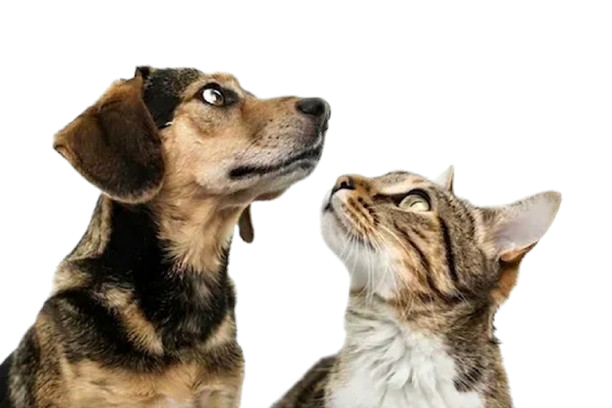
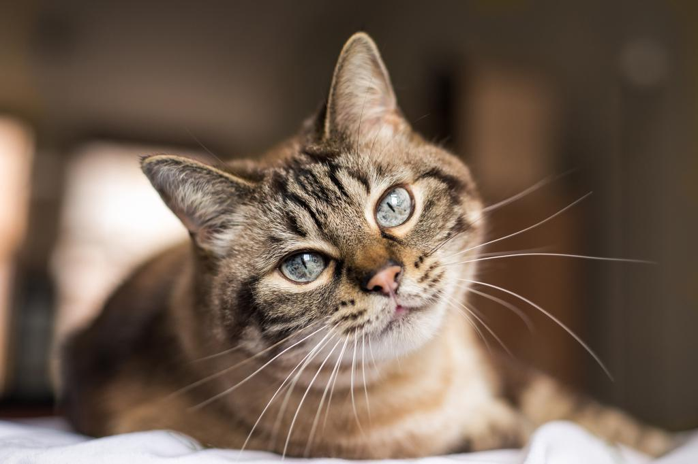
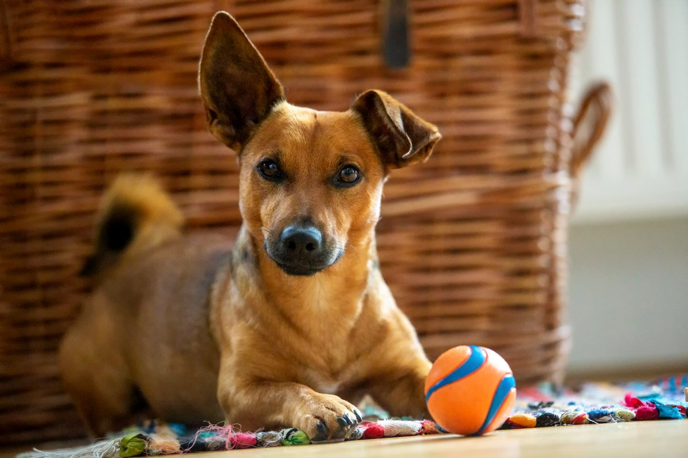
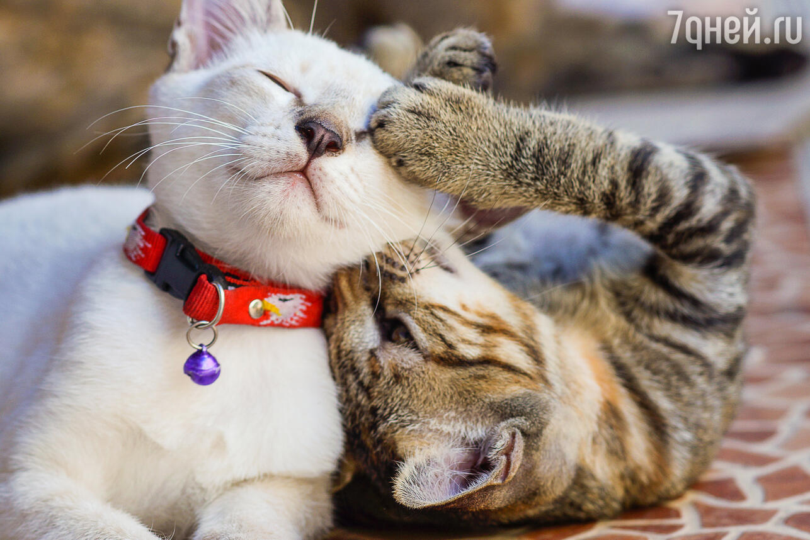
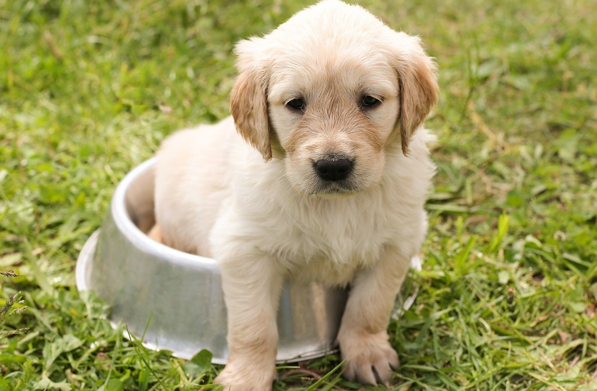

Вы искали себе лучшего друга? Самое время им стать!!!
За миллионами хвостов, мокрых носов и преданных сердец не нужно ехать на другой конец света. Они ждут вас здесь.
В нашем приюте живут сотни историй. Истории о спасении, надежде и вере в человеческое тепло. Каждый из наших подопечных когда-то познал боль одиночества, но не разучился любить. Они готовы стать для вас не просто питомцем, а настоящим членом семьи, лучшим другом, который будет встречать вас у порога каждый день.
Наши животные которые уже нашли себе дом:

Кошка Муся совсем недавно уехала из приюта в новый дом — и уже начала осваиваться. Она любопытная, немного осторожная, но очень тянется к человеку: любит смотреть в глаза и тихо «разговаривать» своим мягким мяуканьем. В приюте она был спокойной и ласковой, особенно ценила внимание и тёплое место рядом.

Это Марс. Его забрали из приюта всего пару дней назад, и, кажется, он уже чувствует себя хозяином дома.
С этими его забавными ушами невозможно было долго оставаться в вольере — он просто очаровал новых владельцев. Теперь вместо казенной подстилки у него яркий коврик, любимый мяч и целая жизнь впереди.

Это Луна и Барсик — недавно они вместе уехали из приюта в один дом, и, кажется, это было лучшее решение для них обоих. Они отлично дополняют друг друга: Луна приносит спокойствие, а Барсик — веселье. Сейчас они привыкают к новому дому, много спят рядом и уже чувствуют себя в безопасности. Видно, что теперь у них началась совсем другая, счастливая жизнь.

Это Лучик. Его история в приюте была короткой, но запоминающейся. Этот крохотный золотистый ретривер попал к нам совсем недавно, и его печальные глаза и беспомощный вид сразу же растопили сердца волонтеров. Первые дни он провел, забившись в уголок вольера, и только начинал доверчиво прижиматься к рукам, когда его нашли его новые хозяева.